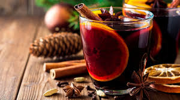

Ingrédients pour 6 personnes
Pour réaliser votre vin chaud, vous aurez besoin des ingrédients suivants :
-

- 2 bouteilles vin rouge ou blanc. Je vous recommande un vin plutôt doux !
- Environ 120 g de cassonade ou sucre brun
- 2 étoiles de badiane
- 4 pincées de gingembre moulues
- 2 petites cuillères à soupe de noix de muscade
- 4 bâtons de cannelle
- Quelques zestes de citron
- 1 Orange coupée en dé
BRAVO ! Vous avez réussi à réunir tous les ingrédients après une longue recherche dans votre supermarché :) Passons maintenant à la suite.
Préparation "5min" et cuisson "40min"
- Faîtes chauffer votre casserole, mettez le vin suivi par le sucre.
- Après 2 minutes, mettez toutes les épices puis mettez les morceaux d'oranges et les zestes de citrons.
- Remuez bien de temps en temps pour que les epices parfument tout le vin.